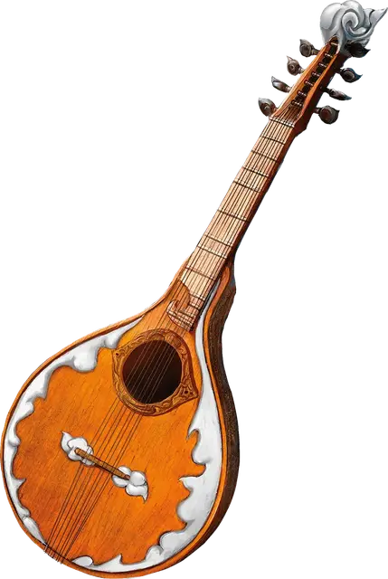

Цитра Мак-Фуирми
Mac-Fuirmidh Cittern
Чудесный предмет, необычный (требуется настройка бардом)

Рекомендованная стоимость 101-500 зм
Существо, пытающееся играть на инструменте, не будучи настроенным на него, должно преуспеть в спасброске Мудрости Сл 15, иначе получит урон психической энергией 2к4.
Вы можете действием сыграть на инструменте и наложить одно из его заклинаний: дубовая кора [barkskin], защита от зла и добра [protection from evil and good], левитация [levitate], лечение ран [cure wounds], невидимость [invisibility], полёт [fly], туманное облако [fog cloud]. После того как инструмент использован для наложения заклинания, он не может повторно накладывать это заклинание до следующего рассвета. Заклинания используют вашу базовую характеристику и Сл спасбросков от ваших заклинаний.
Вы можете играть на инструменте при наложении заклинания, которое делает цели очарованными при провале спасброска, тем самым давая целям помеху на этот спасбросок. Этот эффект применяется только если заклинание имеет соматический или материальный компонент
Варианты этого предмета: Арфа Анструт • Лютня Досс • Мандолина Канаит • Лира Кли • Арфа Оллава • Бандура Фоклучан • Цитра Мак-Фуирми